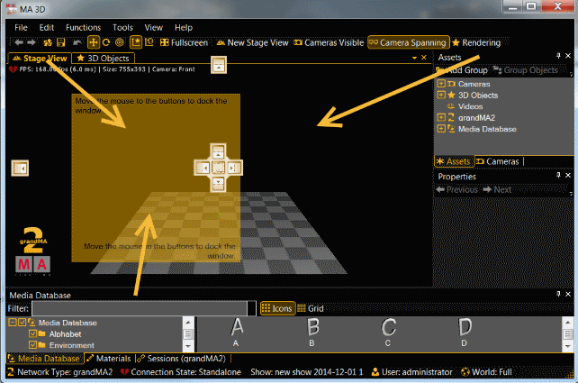

For a better overview, you can arrange your window layout.
If you have a small screen, it could be better to fade out additional views.
To fade out views, click on the little x. If you want to have the view later, got it in the menu bar.
Another option is to pin views on the screen border. Pined views creates view tabs on the right or bottom screen border. If you move the mouse over the tabs, the view appears.
To pin views, click on the pin needle. To deactivate the pin function, click on the pin needle again.

Another option is to move views on a different area. You can move and dock views on the left-, right-, upper-, and lower screen border.
To move a view, click and hold the title bar of a view, move it to an arrow and release the mouse button.
Another option is to undock views and open them in an own window.
To undock views, click and hold the title bar of a view, and move them out of the main screen. The view opens in an own window.
You can save the arranged window layout and load it.
Window Layouts will be saved in "C:\Users\xxx\AppData\Roaming\MA Lighting Technologies\ma3d\3.0.0\WindowLayouts".
You will find all actions and commands regarding the window layout in the menu bar "View - Window Layout".
Save a window layout via "View - Window Layout - Save Window Layout".
To load a previous saved window layout, open "View - Window Layout - Load Window Layout".
Choose the window layout. If there is no window layout available, you did not saved one.
If you cannot find your window layout, use the search function from the windows explorer and search for the end of the file name ".gma3dwindow".
Reset the window layout via "View - Window Layout - Reset Window Layout".
You get the default window layout back.
To delete a window layout there is no function in the menu bar. Use the windows explorer or go to "View - Window Layout - Load Window Layout", click on the window layout, right mouse button and delete.